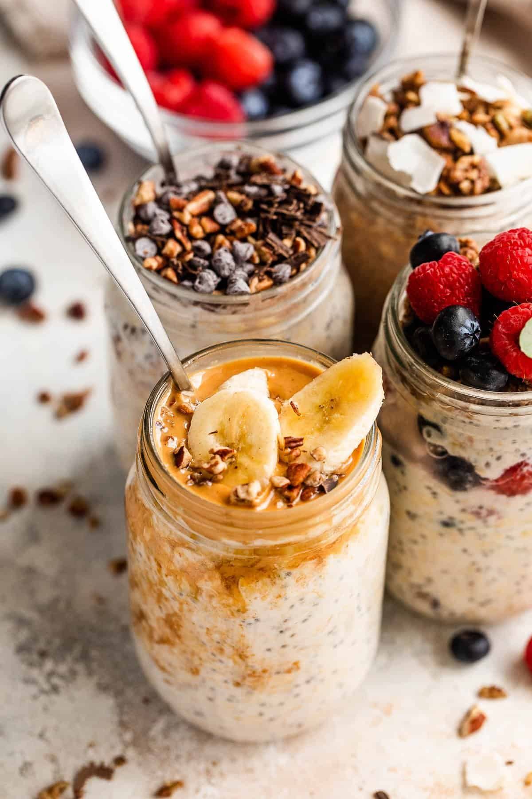

Overnight Oats

Overnight oat jars with different toppings.
Description
Overnight oats are an easy-to-make, healthy breakfast food that come with variety.
Ingredients
The ingredients needed to make some are:
- 1/2 cup of rolled oats
- 1/2 cup of milk
- 1 tablespoon of plain Greek yogurt
- 1 teaspoon of chia seeds
- Honey drizzle
- Your choice of topping, i.e. cut strawberries, fresh blueberries, banana slices, shredded coconut, chocolate chips.
Steps
- First, pour a 1/2 cup of rolled oats into a jar followed by a 1/2 cup of milk.
- Then, add a tablespoon of plain Greek yogurt. Do not stir.
- Afterwards, sprinkle a teaspoon of chia seeds on top.
- Then drizzle some honey to taste.
- Finally, add any sweet topping you would like, such as fresh fruit, chocolate chips, or shredded coconut.
- Screw the top of the jar back on and leave in the fridge overnight.
- Overnight oats can be kept for up to five days, so enjoy in one of the following mornings!